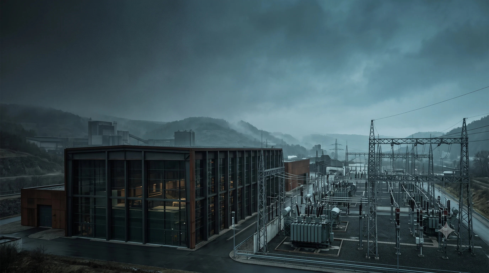

Gutachten &
Stellungnahmen
Strukturierte technische Bewertungen für klar definierte Fragestellungen.

Technische Sachverhalte sicher einordnen – mit unabhängiger Analyse, nachvollziehbarer Bewertung und klarer Dokumentation.
Von der ersten Fragestellung bis zum belastbaren Ergebnis: systematisch, transparent und auf das Wesentliche konzentriert.
Leistungen ansehen ↗Wenn Technik zur Streitfrage wird, braucht es keine Vermutungen. Sondern einen unabhängigen Blick auf Fakten, Zusammenhänge und Ursachen.
Als Sachverständiger für Elektrotechnik untersucht Tobias Jelden elektrische Anlagen, technische Auffälligkeiten und Schadenbilder mit systematischem Blick.
Das Ergebnis ist eine klare, verständliche Bewertung als belastbare Grundlage für private, gewerbliche oder rechtliche Entscheidungen.
So entsteht eine Bewertung ↗Der Leistungsumfang richtet sich nicht nach einer Schablone, sondern nach dem konkreten Sachverhalt und der benötigten Entscheidungssicherheit.
Strukturierte technische Bewertungen für klar definierte Fragestellungen.
Zustand, Ausführung und Auffälligkeiten erfassen und fachlich einordnen.
Fehlerbilder systematisch untersuchen und mögliche Ursachen nachvollziehbar bewerten.
Fachliche Einordnung vor Kauf, Sanierung, Abnahme oder bei strittigen Fragen.
Anlage, Umfeld, Messwerte, Dokumentation und Fehlerbild ergeben erst gemeinsam ein belastbares technisches Gesamtbild.
Auftrag, Ziel und vorhandene Unterlagen werden eingeordnet.
Anlage, Ausführung oder Schadenbild werden systematisch erfasst.
Befunde, Messwerte und Dokumente werden fachlich zusammengeführt.
Das Ergebnis wird klar und entscheidungsorientiert dargestellt.
Wenn ein technischer Zustand unabhängig bewertet, eine Ursache eingeordnet oder eine belastbare Entscheidungsgrundlage benötigt wird.
Je nach Fall helfen Pläne, Prüfprotokolle, Fotos, Rechnungen und bisherige Korrespondenz. Was wirklich relevant ist, wird vorab geklärt.
Sie schildern kurz die Fragestellung. Danach werden mögliche Schritte, benötigte Unterlagen und der zeitliche Rahmen abgestimmt.
Je nach Fragestellung kann zunächst eingeordnet werden, ob und in welchem Umfang eine vertiefte Untersuchung sinnvoll ist.
Schildern Sie kurz den technischen Sachverhalt. Im nächsten Schritt lässt sich klären, welche Form der Bewertung sinnvoll ist.